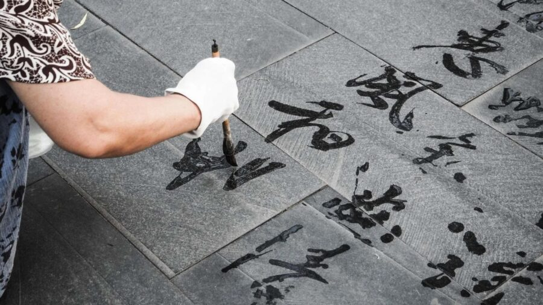

College Arts Association: Embodied Creative Practices: A Calligraphy and Meditation SAC Masterclass with Han Dai-Yu
This masterclass explores the intersection of calligraphy, meditation, and embodied creative practices. Participants will be guided through mindful drawing and writing exercises using simple and traditional materials—ink, water, pencil, and charcoal. The session will include breathing and meditative techniques aimed at heightening awareness of gesture, rhythm, and mark-making as both a visual and internal process.
Special attention will be given to the act of “seeing” through the body: observing how the hand moves, how breath influences line, and how ancient calligraphic principles can inspire contemporary meditative art practices. Participants will engage in quiet drawing rituals and be encouraged to reflect on the experience of making marks as a sensory and contemplative event.
All levels of experience and welcomes diverse ways of seeing and making.
Click into the form https://docs.google.com/forms/d/e/1FAIpQLSfTnboBWl_8-DLOdOnPSlIi99Qz20TKMnjZMAzJQB-6TAcOjA/viewform to reserve your place. Participation is limited to 20 individuals. You will receive a confirmation email upon registration. Any remaining spaces will be available on a first-come, first-served basis at the event.
You must register for the CAA conference but we offer no-cost registration which includes access to conference key events (Convocation, Annual Artist Interviews, Distinguished Scholar Session), CAA Committee and Affiliated Society Business Meetings, Workshops, Services to Artists Committee (SAC) programming and Student and Emerging Professionals Committee (SEPC) programming. Please note this no-cost registration permits access to only these programs and events. You can register here: Annual Conference | Programs | CAA.